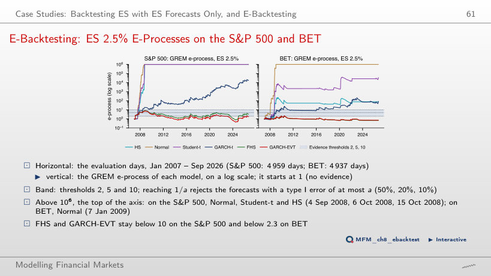

The slide of the lecture is on the left, the same figure on the right, computed in the browser from the same forecasts. The ▶ button moves the parameter step by step.
Why Backtest Risk Forecasts? · Backtesting VaR: Coverage and Independence · The Regulator's View: Basel Traffic Light and FRTB · Backtesting Expected Shortfall · Elicitability and Scoring Functions · Comparative Backtesting · Conformal Prediction for Tail Risk · Case Studies: Backtesting ES with ES Forecasts Only, and E-Backtesting
Why Backtest Risk Forecasts?
Four Markets, One Risk Model

Answer
No. The rate checks only the number of breaches: 57 in 4,959 days. The Kupiec test does not reject GARCH-EVT on the S&P 500 (p = 0.302), but the DQ test does (asymptotic p < 0.001; simulated frequency under the Monte Carlo process of the chapter: 0.5%): the breaches can be predicted from the VaR level and from past breaches.
Backtesting VaR: Coverage and Independence
S&P 500: Two VaR Forecasts, 2007–2026

Answer
No. Both rates, 1.67% and 1.77%, exceed the 1% target, and Kupiec rejects both (p < 0.001). The breaches differ in timing: HS has 26 breaches in 2008 and 12 in 2020, GARCH-t 8 and 6. The independence test rejects HS (LR_ind = 15.90, p < 0.001) but not GARCH-t (p = 0.095): this is a diagnostic difference, not proof that GARCH-t is superior under every criterion.
How Many Breaches Are Acceptable?

Answer
The accepted range is 1–6 breaches at T = 250 (0.4%–2.4% of the days), 5–16 at T = 1,000 and 37–64 at T = 5,000 (0.74%–1.28%): the count grows and the rate concentrates around 1%. At T = 250, x = 0 gives LR_uc = −500 ln 0.99 = 5.03 > 3.84: the rule also rejects in the direction of too few breaches. P(x = 0) = 8.1% is not the Kupiec p-value. The effective size of the rule is 9.5% at T = 250 and 4.6% at T = 5,000; a rejection alone does not prove that the model is wrong.
Power of the POF Test

Answer
Practically 100%. The exact (Binomial) power at π = 2% is 24% at T = 250, 54% at T = 500, 78% at T = 1,000, 96% at T = 2,000 and practically 100% at T = 5,000; the local χ²₁(λ) approximation gives 36%, 61%, 89%, 99% and 100%. The effective size of the rule LR_uc > 3.84 is 9.5% at T = 250 and 4.6% at T = 5,000: the threshold 3.84 corresponds to a nominal 5% level, not to an effective size of exactly 5%.
Breach Rates Across Models and Markets

Answer
We do not reject the nominal 1% frequency. Kupiec checks only unconditional coverage: p = 0.708 establishes neither breach independence nor the probability that the model is correct. On the S&P 500 (2.70%), BET (1.90%) and Bitcoin (1.74%), the Normal model is rejected.
When Do Breaches Happen?

Answer
No: LR_ind = 0.95, with p = 0.33. The estimate π̂₁₁ rests on only 3 pairs of consecutive breaches (n₁₁ = 3, n₁₀ = 38). On the whole 2007–2026 sample, the same test rejects independence for HS: LR_ind = 15.90, p < 0.001.
All VaR Tests at a Glance

Answer
Non-rejection of the nominal frequency does not rule out departures from conditional coverage. Kupiec uses the breach count; the conditional coverage test also uses their sequence, so different decisions do not contradict each other. p = 0.040 is not the probability of the null hypothesis. The DQ test also rejects FHS (asymptotic p < 0.001; simulated frequency: 0.6%), while the duration test does not (p = 0.527).
The Regulator's View: Basel Traffic Light and FRTB
The Traffic Light Through Time

Answer
Yes, if the updated 250-day window still contains at least 10 breaches. The window advances by one day: the new observation enters and the oldest leaves, so a calm day lowers the exception count only if the day that leaves had a breach. On the S&P 500, Normal spends 22.3% of the days in the red zone, HS 14.7%, GARCH-t 2.0% and FHS 0.8%; the peaks of Normal (37) and HS (27) fall in the window ending 01.12.2008.
Backtesting Expected Shortfall
Exceedance Residuals on the S&P 500

Answer
The standard errors of the means and the bootstrap distributions of the statistics. GARCH-t has N = 198 and standard deviation s ≈ 0.814; FHS has N = 128 and s ≈ 0.878; the standard errors of the means are approximately 0.058 and 0.078. This gives t = 1.73 and 1.34, and bootstrap p-values of 0.025 and 0.072. Sample size contributes to the difference but does not determine it alone.
Z₂ Over Rolling 250-Day Windows

Answer
The observed share of windows falling below the chosen threshold: a descriptive frequency over overlapping windows (neighbouring windows share 249 days), neither the probability of a false alarm nor the probability that the ES forecasts are wrong. The −0.70 threshold approximates the 5% critical value for T = 250 under many distributions (Acerbi–Szekely); the effective level depends on the forecast distributions. GARCH-t is below −1.8 in 3.0% of the windows; its minimum, −2.52, is in the window ending 05.02.2008.
All ES Tests at a Glance

Answer
Z₂ combines breach frequency with loss size relative to ES: Z₂ = −0.723, with p = 0.002. There are 208 breaches in 4,959 days, i.e. 4.19%, against a 2.5% target; the mean L/ES ratio on those days is approximately 1.027. Thus Z₂ = 1 − [208/(4,959 × 0.025)] × 1.027 ≈ −0.723. McNeil–Frey tests the mean exceedance residual conditional on a breach and does not separately impose the nominal frequency.
Elicitability and Scoring Functions
Elicitability in Pictures

Answer
At the true VaR 2.5%, for every ν: the derivative F(v) − (1 − α) is zero at the quantile. On the grid, the minimum is 1.596 for a true VaR of 1.599 at ν = 2.5, 1.960 for 1.963 at ν = 4 and 1.970 for 1.973 at ν = 30. The expected FZ0 loss has its minimum at the true (VaR, ES) pair: at ν = 4, (1.960, 2.818) on the grid against (1.963, 2.824). ES alone has no scoring function with this property.
Comparative Backtesting
Average FZ0 Loss by Model

Answer
No: the standard error of the mean difference must also be estimated. For these data, the DM test with q = 9 Newey–West lags gives 2.66 and p ≈ 0.008, rejecting equality at the individual 5% level. GARCH-EVT differs from FHS by only 0.003 (DM = 1.24, p = 0.21). Negative FZ0 scores do not prevent testing.
Pairwise Diebold–Mariano Tests, S&P 500

Answer
In this S&P 500 comparison, Normal has a higher mean FZ0 loss than HS. DM = 2.88 exceeds the two-sided 1.96 threshold for an individual 5% test. This does not establish a general superiority of HS over models using the Normal distribution. The 13 significant comparisons out of 15 are individual results without a multiple-testing adjustment; the exceptions are Normal–Student-t (1.94) and FHS–GARCH-EVT (−1.24).
Which Models Survive?

Answer
The procedure excludes neither model: FHS has p = 1.000 on both markets, GARCH-EVT p = 0.211 on the S&P 500 and above 0.96 on BET. The MCS compares FZ0 losses across candidate models; joint retention proves neither equal performance nor correct calibration. GARCH-t is excluded on the S&P 500 (p = 0.010) and on BET (p = 0.096).
Conformal Prediction for Tail Risk
Conformal VaR Through COVID-19

Answer
Yes: the breaches occur among the 13 days with a finite VaR. VaR = ∞ prevents a breach only on that day and provides no usable finite threshold; α_t fell to 0.09%. Split conformal has 6 breaches over the same days, against 0.5 expected. Separately, the split conformal VaR 1% value then stays near 18% for a year, because the March 2020 scores remain in the 250-day calibration set.
Coverage in Calm and Crisis Periods

Answer
No: the overall rate is a weighted average of the rates in different regimes. With the 90th-percentile crisis definition, split conformal has 7.29% on the 713 crisis days; on EUR/RON it reaches 11.43%. ACI lowers the crisis rate to 4.49% on the S&P 500 and 5.38% on BET. Marginal coverage does not guarantee coverage within each regime.
Case Studies: Backtesting ES with ES Forecasts Only, and E-Backtesting
Case Study (3/4): Tails Matter More Than Refits

Answer
The innovation distribution: the table compares the two distributions on the same 50 combinations (5 windows × 5 refit frequencies × GARCH/GJR-GARCH), so window and refit frequency do not differ between them. A correct model would be rejected, at the 5% level, for about 5% of the stocks, not for 80%–96%. With Student-t innovations, the share is at most 0.01 for windows of at least 1,000 days. The readout for refitting every 250 days covers only those configurations: 0.80–0.92 with Normal innovations.
E-Backtesting: ES 2.5% E-Processes on the S&P 500 and BET

Answer
It does not reject: for a = 0.05, the threshold is 1/a = 20, and the peak of 8.55 (29.09.2008) does not reach it; the final value is 3.31. Threshold 10 corresponds to a = 10%, threshold 5 to a = 20% (reached on 01.11.2007). The guarantee P(sup M_t ≥ 1/a) ≤ a requires the course’s null hypothesis: correct conditional VaR, ES at least as large as the true ES, and bets chosen from past information. With the ES raised by 10%, the peak falls to 3.38.
Daily losses (negative log returns) of the S&P 500, BET and Bitcoin, EODHD prices, and of EUR/RON, the BNR reference rate. One-day VaR and ES forecasts on a rolling window of 1,000 days, evaluated from January 2007 (EUR/RON from June 2009, Bitcoin from June 2017) to 18 September 2026. Case studies: Table 3 of Bayer and Dimitriadis (2022) and its replication on 11 S&P 500 stocks; the e-processes of Wang, Wang and Ziegel (2026), computed from the ES 2.5% forecasts of the chapter.